|
Families that gain their livelihood by grain farming are busiest at spring planting and fall harvest, but farming continues throughout the year. As well many families are active in their communities. They contribute to the vitality of many of the rural villages and towns. Many take part in educational, cultural, social, health and political organizations.
Grain, especially wheat, is a driving force in the Saskatchewan economy. Other economically significant crops are rye, flaxseed, mustard seed, lentils and canary seed. Of nearly 35 million acres of farm land planted to wheat in Canada, over 21 million acres of that is seeded in Saskatchewan, mainly with spring wheat and durum. Recently, economic recession and unstable grain markets have resulted in diversification of grain crops produced in Saskatchewan, but wheat remains an essential commodity. Three million acres of barley and three million acres of canola are planted in the province each year. Canola, oats and barley are the most popular crops following wheat. Let us now look at life on a crop farm and how it changes season to season. |
|
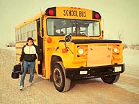 This a a harsh season in Saskatchewan with temperatures often dipping below freezing with several weeks in the minus 20-30 celsius range and even lower. Nevertheless, farm children still have to go to school; often traveling long distances by bus to the nearest schoolhouse. Many local schools have closed because of declining rural populations. Only schools in the larger towns now exist.
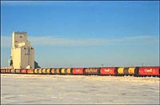 Saskatchewan's grain begins its journey to distant markets in the local grain elevator, where it is loaded on railway cars. Grains are graded on the basis of colour, plumpness of kernels and protein content, with each grade handled separately. Thirty thousand rail cars are required to move the 30 million tonnes of grain to ocean ports in Vancouver, Prince Rupert and Churchill, and to Thunder Bay at the head of the St. Lawrence Seaway. At the ports, the grain is transferred to the terminal elevators, weed seeds removed if not already done, and the grain loaded on to ships. 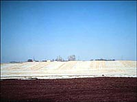
Winter winds blow snow from fields where tillage has buried the straw, whereas fields with standing stubble (straw that remains after the grain is harvested) retain ten to twenty centimetres of snow. The water from the snow can be an important addition to the moisture available for the next year's crop resulting in better yields. In addition, soil erosion by winds from bare fields in winter leads to gradually decreasing soils productivity, and must be avoided. Some call the mixture of snow and soil or dirt that blows into ditches near bare fields
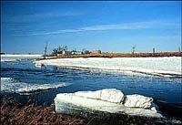
"Spring on the prairies comes like a surprise, one minute there's snow on the ground, the next there's sun in your eyes." Connie Kaldor, 1975Spring snow-melt is important on the prairies. Some of the water soaks into the soil and is stored for the summer's crops. Runoff water fills the potholes and ponds, providing nesting areas for ducks and other birds, or is retained in reservoirs for use by people and livestock in the dry months which are almost certain to follow. Some of the water moves through the soil to recharge the groundwater, which is important where water from wells is used by farms, towns or cities. 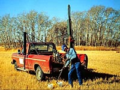 Sampling the soil in each field is the first step in obtaining an analysis or soil test that measures nutrients in the soil, and recommends amounts of fertilizer for the next crop. This is best done in the spring prior to seeding, since some nutrients such as nitrogen are mobile and can leach from the soil.Truck-mounted samplers are convenient because several samples are needed from each field to give a good representative measurement. 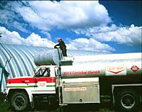 Fuel to power tractors is but one of the costs incurred by farmers to produce grain. About one million horses and three to four million acres of oats once provided the power to Saskatchewan farms. Today, large and efficient tractors using petroleum fuels increase farming efficiency. Even though farm fuel receives a tax break, the farmer is always at the mercy of escalating energy costs. 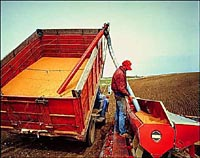 A farmer transfers seed from a truck to the seed box on a drill, the machine used to place the seeds in the soil. Each crop requires a specific seeding rate and depth and row spacing that will provide the plants with a good rooting environment. Crops spaced too close together will compete with each other for nutrients and water. Crops spaced too far apart will let in weeds and will not have high yields. 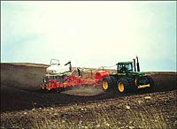 A farmer seeds his new crop with an implement called an airseeder. The air-seeder permits the simultaneous planting of seeds and the placement of fertilizer in the soil near the seeds. Fertilizers are produced industrially, and contain nutrients such as nitrogen or phosphorus to supplement those in the soil. Nitrogen is made from natural gas, phosphate from mined phosphate rock. A third fertilizer element, potassium is more abundant in Saskatchewan soils and is only needed on certain soil types. Potassium is of course mined here in Saskatchewan.
Summer is a time when the farm family worries about their crop. Not enough moisture, high winds, hail and pests can all take their toll. The farmer must be especially careful about controlling the weeds and pests in his crop as they will affect the yield and likely affect his income for the year. Many farmers edge their bets against severe losses, by taking out crop insurance. Herbicides are chemical compounds that are used to control weeds in crops. Most herbicides are produced industrially. It takes years of development and research to test herbicide effectiveness and safety. Appropriate use and safe handling of herbicides are important, as well as improved sprayers which apply them with minimal drift to adjacent fields. Herbicide residues are a concern as a future sensitive crop grown in the same field may be affected. Pesticide residues can also find their way into the ground water. 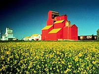 The yellow flowers of canola are a familiar mid-summer scene in the parkland region of Saskatchewan. Canola is an oilseed crop developed in the prairie region that now accounts for about 15% of Saskatchewan's farm income. Canola produces a nutritious vegetable oil that is used around the world. 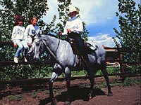 The children of farm families have opportunities for activities such as horsemanship that are not so easily available in cities. Many of the activities for rural children are organized within 4-H clubs. 4-H clubs emphasize the values and skills of rural life, and the development of capable and self-reliant young people. 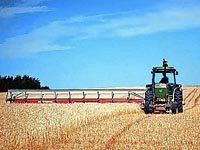 As mid August comes around, some farmers in the drier, southern areas cut and thresh grain crops in a single operation, or straight-combine. Most Saskatchewan farmers, however, cut their crops a few days prior to threshing. A swather cuts the grain and places it in long rows. The swathed grain is picked up and threshed by a combine, once it has dried and the kernels hardened. A wet fall or early winter can cause some of the grain in the swaths to sprout or mould thereby reducing quality. 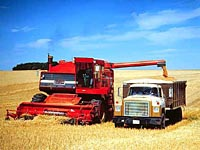
Thinking about the coming fall and winter, the farmer can catch much of the precious snow moisture and avoid soil erosion by careful combining techniques.
The amount of snow retained in stubble fields can be increased by leaving strips of taller stubble. In this way the harsh winter winds do not blow away the snow and with it the surface soil. An inexpensive attachment is available for swathers that leaves the strips.
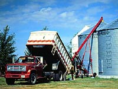 Farmers produce more grain that can be delivered to the grain elevators at harvest-time, so storage must be provided on farms. Granaries store the grain, and augers mechanically fill and empty the grain bins. The farmer must be very careful not to store wet grain as it can spoil and produce a dangerous toxin (ergot) from mold.
High quality, weed-free seed of a recommended crop variety is important to successful crop production. Seed-cleaning facilities consist of the seed cleaner and a series of bins that are connected by augers to permit the storage and transfer of grain during the cleaning process. Cleaning removes weed seeds, and broken or under-sized kernels. 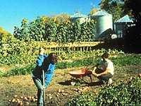 Most farms have a garden where vegetables for the family are grown. Today's farms, however, are less self-sufficient than the farms of earlier days because they lack the variety of plants and animals that were commonly produced in the past. As well, many farmers are employed away from the farm. Here the farm family helps in collecting the vegetables that will be stored and processed for the winter. Jam making, bottling, pickling, drying and smoking meats are food processing techniques commonly practised by Saskatchewan Farm families.
|